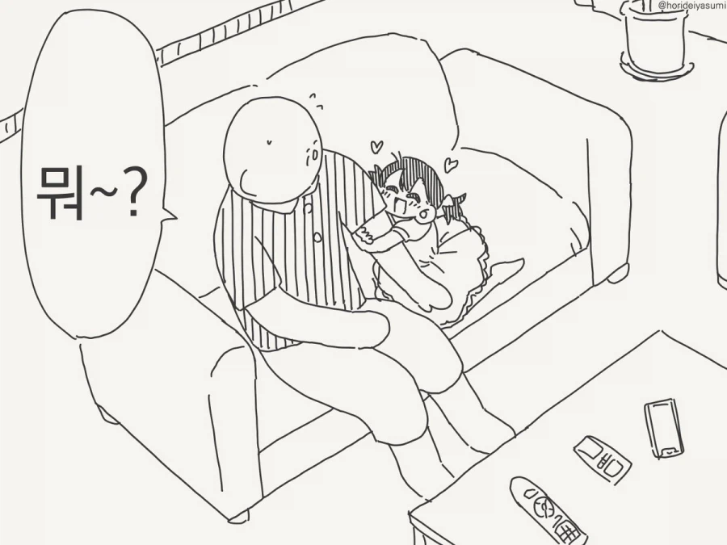
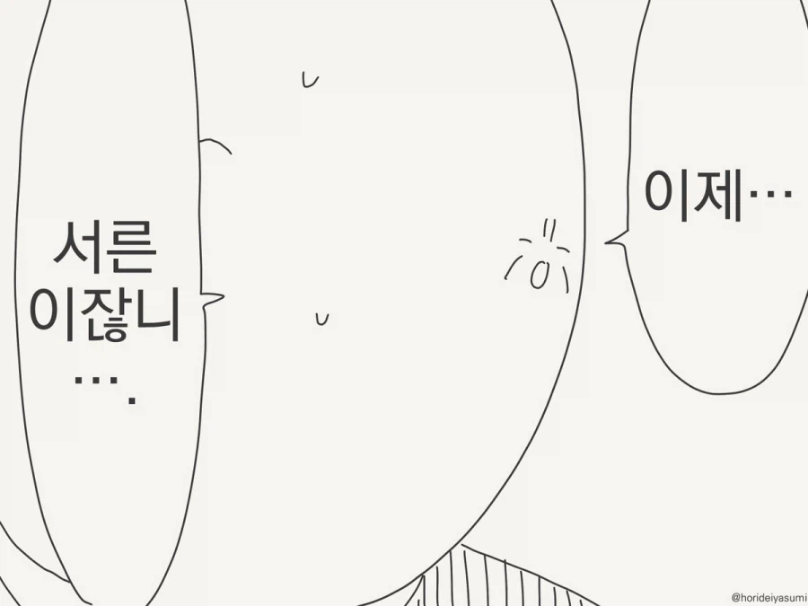

76 · 12 · 2 시간 전 · 원문


불타는 효녀였네;;;
수집 당시 댓글 12개
부기부기부기햄부기 · 4 시간 전
제발 댓글에 직접 낳은 2번째 아내라고 하지말아주세요
↳ 답글 · 하와이안피자는세계제일의발명품 · 3 시간 전
알겠다 안 하겠다
↳ 답글 · 에스로반 · 3 시간 전
직접 낳은 2번째 아내
↳ 답글 · LRhook · 3 시간 전
어디로 낳았나요?
↳ 답글 · 자연감소 · 2 시간 전
마음으로...낳았습니다...
↳ 답글 · 햄부기온앤온 · 3 시간 전
↳ 답글 · 대충바코드닉 · 2 시간 전
낳은건 아내다!
인간실격짐승합격 · 3 시간 전
서른????
악질틀딱히틀딱 · 3 시간 전
순라면진한맛 · 3 시간 전
오펀 천사의 비밀 같네
하락장 · 2 시간 전
치바현경은 오늘도 고민하고있다
족저근막염 · 2 시간 전
서른이면 좀 나가라
제발 댓글에 직접 낳은 2번째 아내라고 하지말아주세요